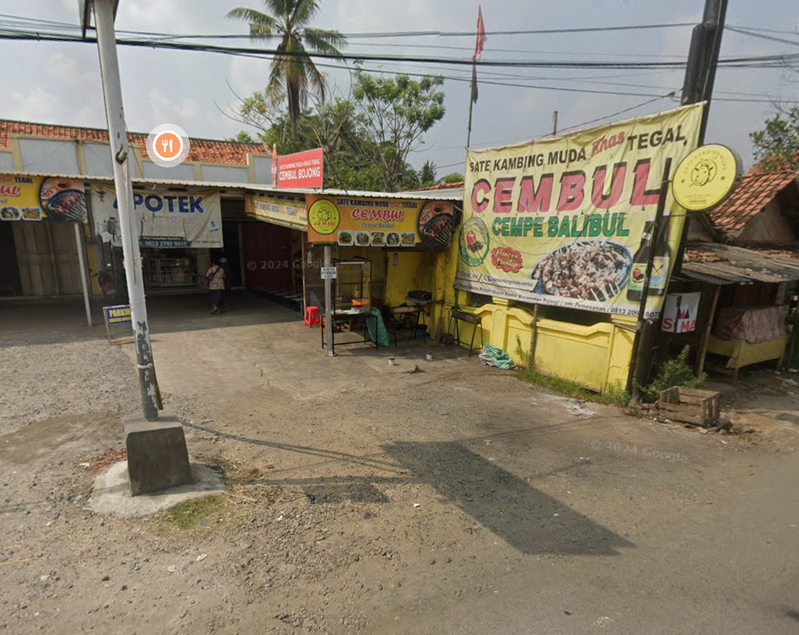
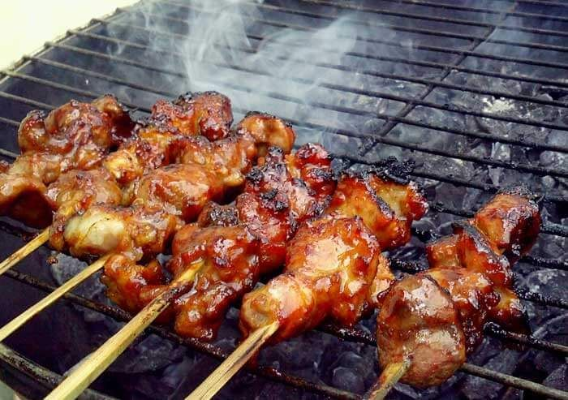
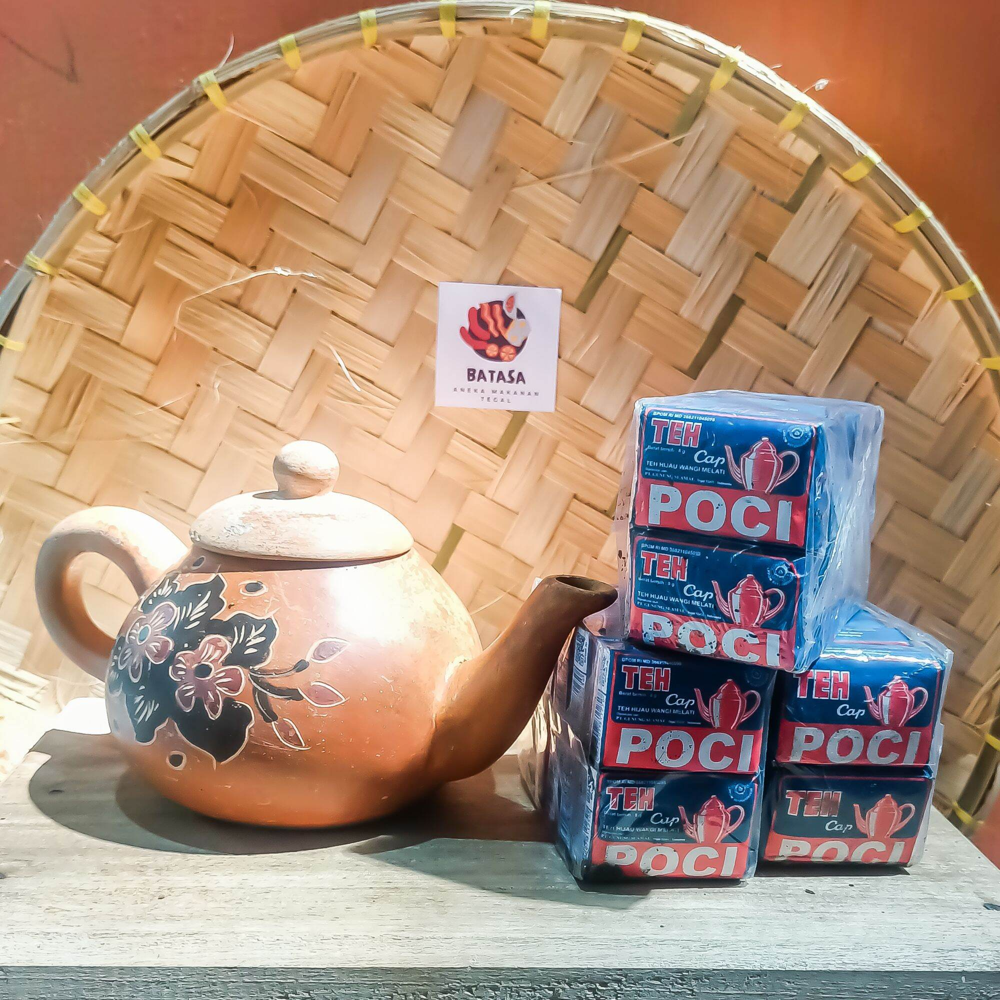
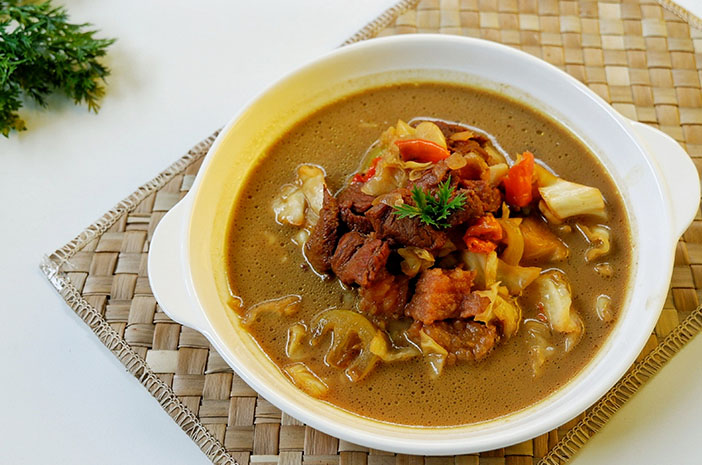
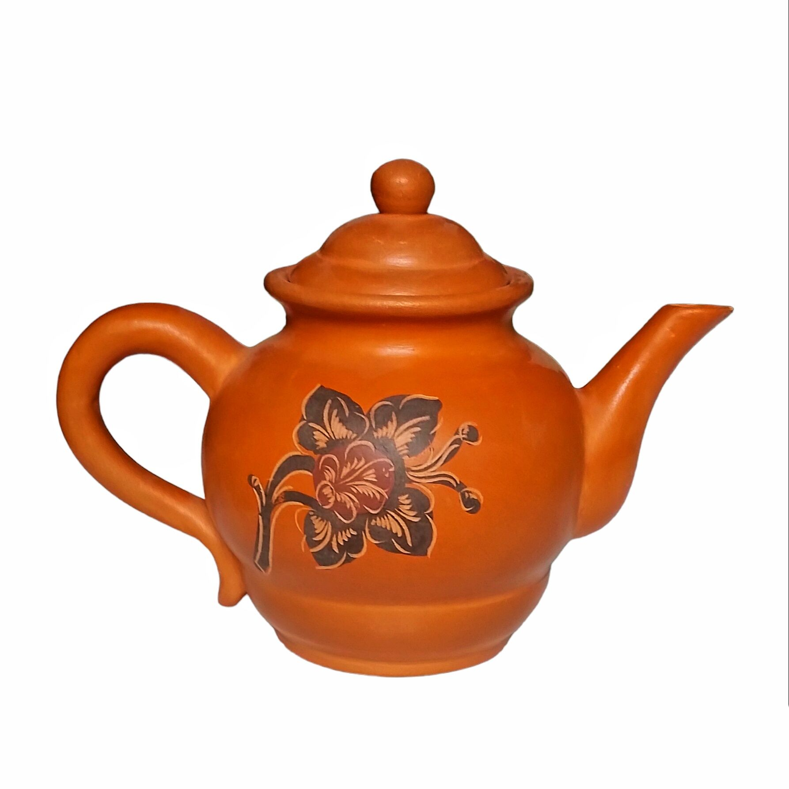
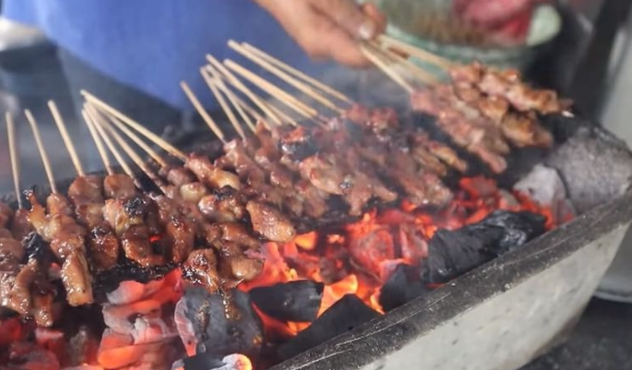

Menikmati kehangatan sate khas Tegal dari bara api hingga ke suasana warung yang penuh cerita.

Suasana hangat dan bersahaja di warung khas Tegal, tempat sate terbaik dibakar setiap hari.

Dibakar di atas arang alami, aroma sate mengundang rasa lapar setiap kali bara menyala.

Teh panas dalam poci tanah liat, disajikan dengan gula batu yang memberikan rasa manis alami.

Kombinasi rasa pedas dan gurih dari daging kambing empuk dalam kuah kental yang menggoda.

Simbol kehangatan khas Tegal, menyajikan teh poci dengan sentuhan tradisi yang masih terjaga.

Asap sate, bara api, dan senyum pelanggan — perpaduan cita rasa dan kebahagiaan yang otentik.